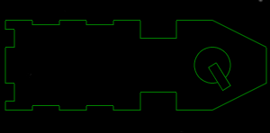
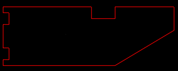
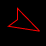

| Number of Astroids | |
| Number of Enemy Fighters | |
| Carrier Spawn Interval | |
| Air Friction | |
| Number of Stars | |
| Map Width | |
| Map Height | |
| Developer mode? | |
| Draw hit circles? |
Oh dang, we're stuck in hostile territory and the enemy (the dreaded red empire) has sent their ships to crush you and the peace loving people of the green republic. Luckily we're not entirely defencless! We have a single class "A" dreadnought capable of deflecting their attacks and destroying their capital ships. Unfortunately though its targeting systems were knocked out in the initial attack. That means it's your duty as our ace pilot and resident badass to scout enemy ships and relay their coordiants back to the dreadnought! Simple, right?
This is our dreadnought, the only ship we have capable of destroying enemy carriers. His targeting system is out so he needs your help, but he can see local enemy ships, and will fire on them, but is aim is bad so be sure to stay out of the way!
And this is what you're up against, an enemy carrier. They deploy new fighters periodically to attack you, so watch out. Your mission is to get close enough to them so that your ships targeting system can lock on. You'll know you're in range when a targeting reticule appears around the carrier. When it reaches its smallest the dreadnought will lock on and fire it's main cannon. You must find all the carriers on the map and eleminate them.
And this is an enemy fighter. They're going to be your main source of pain here. There's a lot of them but luckily their pilots suck. They'll take basic evasive manuvers, but if you can get them moving fast enough they'll crash. They do not have conversion cores, but they do have guns. They generally can't hit anything moving at speed, but if you slow down, watch out!
Piloting your scout ship is easy. Use the left and right arrow keys to change your ship's facing, and hold the up arrow key to accelerate.
There is a lot of debris floating around and your ship can't survive direct collisions with it. As such we've installed a "conversion core" in your ship. The conversion core is experimental technology that allows you percise control over your ship's momentup. Press and hold the space bar to convert all your current momentum to a new direction. This is essenscial for dodgine enemy fire and navigating at high speeds. Be warned though, the conversion core takes a moment to activate, so be sure to time it right. You can also tap the space bar to bring yourself to a dead stop. This is useful for avoiding debris but will make you an easier target for enemy fighters. One final note, the conversion core is a large piece of equipment, so we couldn't mount any guns on your ship. You'll have to use your superior manuverability to stay safe